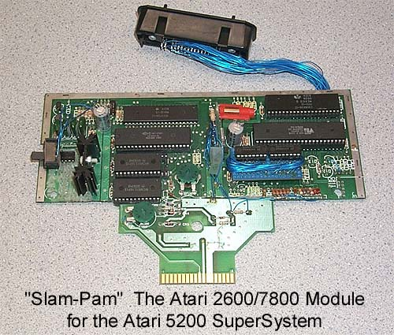

Working Prototype, video not functioning
currently.
In 1983 through 1984 Atari and GCC (General Computer Corporation) worked
on an all new Atari game console which was originally called the Atari
3600, but was later changed to the Atari 7800 (5200 graphics + 2600 compatibility
= 7800 Prosystem). While this new system would
give its new owners the ability to play games with incredible graphics
and with Pokey equipped games, good sound too. However, there
were still millions of Atari 5200 owners who wanted to retain their system,
but most likely would also like to play all the new Atari 7800 games as
well, so Atari began work on an Atari 2600/7800 compatibility module which
would plug into the Atari 5200, codenamed SLAM-PAM this would give Atari
5200's the ability to keep up with the new console, plus play all the Atari
5200 games as well. The image above is the work-in-progress
prototype of the Slam-Pam which was designed by Gary Rubio, it was an Atari
7800 motherboard cut down and connected to the cut off connector from an
Atari CX-55 adapter board, the prototype was almost finished (video portion
still needed work, but the production units were never made.
History Note: (GAR:PAM-VCS adapter mod)
It should be noted that the older Atari 5200 4 Port consoles had an issue
with using the Atari CX-55 2600 compatibility modules. The
power line on the cartridge port of the older 4 Port 5200's was in a different
location then the newer Atari 5200 2 Port models which the Atari CX-55
module was designed for. Upon inserting the CX-55 into an older
4 Port 5200 console and powering it up, the system and CX-55 would short
out and be damaged. During several meetings
regarding the decision on what to do with all the older incompatible Atari
5200 4 port motherboards which were destined to be thrown away, Gary Rubio
examined the motherboards and found a quick patch fix to modify the motherboards
so they could be used with the Atari CX-55 module. So
a million dollars of PAM boards were salvaged by this modification.
The modified 4 port Atari 5200's have an Asterix next to their Model #
to designate that they were compatible. Atari Authorized Service
centers were issued Tech Tip updates on how to perform the modification
as well.